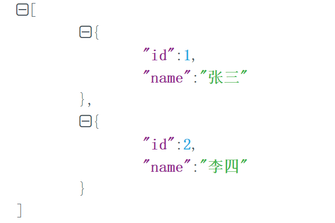
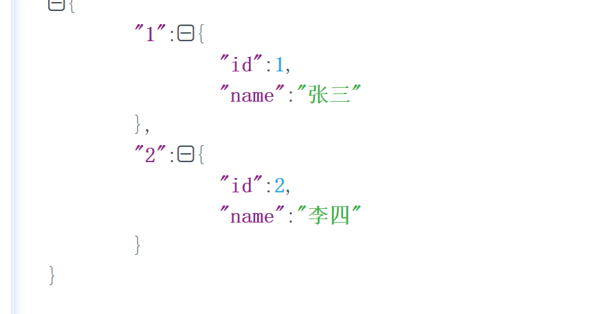

Java8
在很多编程语言里(例如JavaScript)，都可以实现函数式的编程，也就是函数可以作为变量去灵活使用，但是java一直都不可以，之前很多都使用一些匿名内部类这种丑的亚批的代码。java8之后算是可以使用伪函数式编程，其实也是应用了单方法接口去实现。并且设计出了lambda语法
函数式编程
lamda
lambda之前实现thread
Thread thread = new Thread(new Runnable() {
@Override
public void run() {
System.out.println("xxx");
}
});
在lambda实现thread
Thread thread = new Thread(()-> System.out.println("xx"));
函数式接口
函数式接口(Functional Interface)就是一个有且仅有一个抽象方法，但是可以有多个非抽象方法的接口。
其实上面的runnable接口就是一个函数式接口
Java8 添加了一个新的特性Function，顾名思义这一定是一个函数式的操作。我们知道Java8的最大特性就是函数式接口。所有标注了@FunctionalInterface注解的接口都是函数式接口，具体来说，所有标注了该注解的接口都将能用在lambda表达式上。（函数式接口可以被隐式转换为 lambda 表达式）
函数式接口可以被隐式转换为 lambda 表达式。
Lambda 表达式和方法引用（实际上也可认为是Lambda表达式）上。
标注了@FunctionalInterface的接口有很多，但此篇我们主要讲Function，了解了Function其他的操作也就很容易理解了。
我们也可以自己实现一个
Lambda表达式是如何在java的类型系统中表示的呢？每一个lambda表达式都对应一个类型，通常是接口类型。而“函数式接口”是指仅仅只包含一个抽象方法的接口，每一个该类型的lambda表达式都会被匹配到这个抽象方法。因为 默认方法 不算抽象方法，所以你也可以给你的函数式接口添加默认方法。
我们可以将lambda表达式当作任意只包含一个抽象方法的接口类型，确保你的接口一定达到这个要求，你只需要给你的接口添加 @FunctionalInterface 注解，编译器如果发现你标注了这个注解的接口有多于一个抽象方法的时候会报错的。
@FunctionalInterface
interface Converter<F, T> {
T convert(F from);//如果写两个方法就会报错
}
public class MyTest {
public static void main(String[] args) {
Converter<String, Integer> converter = (from) -> Integer.valueOf(from);//如果是多行就用大括号括起来 使用Lambda表达式来表示该接口的一个实现(注：JAVA 8 之前一般是用匿名类实现的)：
Integer converted = converter.convert("123");
System.out.println(converted); // 123
}
}
需要注意如果没有@FunctionalInterface，上面的代码也是对的。
Stream
foreach
//构建个User对象的list，后面都会使用到 User(id,name,age)
List<User> userList = Lists.newArrayList();
userList.add(new User(1, "aaa", 18));
userList.add(new User(2, "bbb", 21));
userList.add(new User(3, "ccc", 25));
//使用stream.foreach 依次输出
userList.stream().forEach(user->{
System.out.println(user.getName());
});
filter
filter可以按照你的要求进行过滤，非常方便
userList.stream().filter(user -> user.getAge() > 18).forEach(user -> {
//输出age大于18的user的name
System.out.println(user.getName());
});
filter中也可以是一个大括号的语法段或者是方法，返回true/false即可
List list = list.stream().map(xxDO::getID).filter(xxx::contains).collect(Collectors.toList());
Map映射
中间操作map会将元素根据指定的Function接口来依次将元素转成另外的对象，下面的示例展示了将字符串转换为大写字符串。你也可以通过map来讲对象转换成其他类型，map返回的Stream类型是根据你map传递进去的函数的返回值决定的。
//字符串集合转成大写形式，并按序输出
stringCollection
.stream()
.map(String::toUpperCase)
.sorted((a, b) -> b.compareTo(a))
.forEach(System.out::println);
// "DDD2", "DDD1", "CCC", "BBB3", "BBB2", "AAA2", "AAA1"
List<Staff> staff = Arrays.asList(
new Staff("mkyong", 30, new BigDecimal(10000)),
new Staff("jack", 27, new BigDecimal(20000)),
new Staff("lawrence", 33, new BigDecimal(30000))
);
//将对象集合中对象的某个字段生成一个集合
List<String> collect = staff.stream().map(x -> x.getName()).collect(Collectors.toList());
System.out.println(collect); //[mkyong, jack, lawrence]
List<Integer> num = Arrays.asList(1,2,3,4,5);
//依次对集合中的对象进行操作
List<Integer> collect1 = num.stream().map(n -> n * 2).collect(Collectors.toList());
System.out.println(collect1); //[2, 4, 6, 8, 10]
//将对象集合生成key为id，value为对象的映射map
userMap.putAll(users.stream().collect(Collectors.toMap(e ->
e.getId().toString(), view -> view, (k1, k2) -> k2)));
//[{"id":1,"name":"张三"},{"id":2,"name":"李四"}] -- > {1:{"id":1,"name":"张三"},2:{"id":2,"name":"李四"}}


//将do集合的元素挨个转成bo然后形成一个新的集合
userBOS = userDOS.stream().map(USERConvert::convertDO2BO).collect(Collectors.toList());
List<Long> userids = bos.stream().map(UserBO::getId).collect(Collectors.toList());
collect
toMap
collect可以实现各种集合之间按照一定自定义规则的转换，最为典型的就是list转换map的例子
Map<String, User> map = userList.stream().collect(Collectors.toMap(User::getName, pojo -> pojo, (oldVal, newVal) -> newVal));
解释下toMap的3个参数
第一个参数是用哪个字段作为key
第二个参数是map的value类型，可以取原来的对象,也可以是原来对象的某个字段 比如pojo->pojo改为 User::getAge 就是value只收集user的age字段
第三个参数(k1, k2) -> k1)是可选的，在key冲突的时候丢弃其中一个，如果没有这个参数会直接报错
当toMap中没有用合并函数时，出现key重复时，会抛出异常 : Exception in thread “main” java.lang.IllegalStateException: Duplicate key aa
当使用合并函数时,可通过Labmda表达式,对重复值进行处理
toList
Collectors.toList()：转换成List集合。/ Collectors.toSet()：转换成set集合。
System.out.println(Stream.of("a", "b", "c","d").collect(Collectors.toSet()));
Collectors.toCollection(TreeSet::new)：转换成特定的set集合。
TreeSet<String> treeSet = Stream.of("a", "c", "b", "a").collect(Collectors.toCollection(TreeSet::new));
System.out.println(treeSet);
拼接字符串
System.out.println(Stream.of("1", "3", "3", "2").collect(Collectors.joining(",")));
collectingAndThen
Collectors.collectingAndThen(Collectors.toList(), x -> x.size())：先执行collect操作后再执行第二个参数的表达式。这里是先塞到集合，再得出集合长度。
Integer integer = Stream.of("1", "2", "3").collect(Collectors.collectingAndThen(Collectors.toList(), x -> x.size()));
collect+map
collect+map抽取pojo对象的某个字段
List<String> names = userList.stream().map(User::getName).collect(Collectors.toList());
match
Match 匹配
Stream提供了多种匹配操作，允许检测指定的Predicate是否匹配整个Stream。所有的匹配操作都是最终操作，并返回一个boolean类型的值。
boolean anyStartsWithA =
stringCollection
.stream()
.anyMatch((s) -> s.startsWith("a"));
System.out.println(anyStartsWithA); // true
boolean allStartsWithA =
stringCollection
.stream()
.allMatch((s) -> s.startsWith("a"));
System.out.println(allStartsWithA); // false
boolean noneStartsWithZ =
stringCollection
.stream()
.noneMatch((s) -> s.startsWith("z"));
System.out.println(noneStartsWithZ); // true
Collectors
Collectors类中提供的方法
总结一下，就是以下几类方法：
转换成集合：toList()，toSet()，toMap()，toCollection()
将集合拆分拼接成字符串：joining()
求最大值、最小值、求和、平均值 ：maxBy()，minBy()，summingInt()，averagingDouble()
对集合分组：groupingBy()，partitioningBy()
对数据进行映射：mapping()
将流数据转换成集合
//转换成list集合
List<String> stringList = strings.stream().collect(Collectors.toList());
//转换成Set集合
Set<String> stringSet = strings.stream().collect(Collectors.toSet());
//转换成Map集合
Map<String,Object> stringObjectMap = strings.stream()
.collect(Collectors.toMap(k -> k, v -> v ));
System.out.println(stringList);
System.out.println(stringSet);
System.out.println(stringObjectMap);
/*=================打印结果=================
[ab, s, bc, cd, abcd, sd, jkl]
[ab, bc, cd, sd, s, jkl, abcd]
{sd=sd, cd=cd, bc=bc, ab=ab, s=s, jkl=jkl, abcd=abcd}
*/
将集合拆分拼接成字符串
//joining
String str1 = strings.stream().collect(Collectors.joining("--"));
//collectingAndThen
String str2 = strings.stream().collect(Collectors.collectingAndThen(
Collectors.joining("--"), s1 -> s1 += ",then" //在第一个joining操作的结果基础上再进行一次操作
));
System.out.println(str1);
System.out.println(str2);
/*=================打印结果=================
ab--s--bc--cd--abcd--sd--jkl
ab--s--bc--cd--abcd--sd--jkl,then
*/
求最大值、最小值、求和、平均值
List<Integer> list = Arrays.asList(1, 2, 3, 4, 5);
//最大值
Integer maxValue = list.stream().collect(Collectors.collectingAndThen(
//maxBy需要Comparator.comparingInt来确定排序规则
Collectors.maxBy(Comparator.comparingInt(a -> a)), Optional::get
));
//最小值
Integer minValue = list.stream().collect(Collectors.collectingAndThen(
//minBy需要Comparator.comparingInt来确定排序规则
Collectors.minBy(Comparator.comparingInt(a -> a)), Optional::get
));
//求和
Integer sumValue = list.stream().collect(Collectors.summingInt(i -> i));
//平均值
Double avgValue = list.stream().collect(Collectors.averagingDouble(i -> i));
System.out.println("列表中最大的数 : " + maxValue);
System.out.println("列表中最小的数 : " + minValue);
System.out.println("所有数之和 : " + sumValue);
System.out.println("平均数 : " + avgValue);
/*=================打印结果=================
列表中最大的数 : 5
列表中最小的数 : 1
所有数之和 : 15
平均数 : 3.0
*/
虽然这样也可以，但是明显IntSummaryStatistics要更灵活点
对集合分组
Map<Integer, List<String>> map = strings.stream()
//根据字符串长度分组（同理，对对象可以通过某个属性分组）
.collect(Collectors.groupingBy(String::length));
Map<Boolean, List<String>> map2 = strings.stream()
//根据字符串是否大于2分组
.collect(Collectors.groupingBy(s -> s.length() > 2));
System.out.println(map);
System.out.println(map2);
/*=================打印结果=================
{1=[s], 2=[ab, bc, cd, sd], 3=[jkl], 4=[abcd]}
{false=[ab, s, bc, cd, sd], true=[abcd, jkl]}
*/
.对数据进行映射
String str = strings.stream().collect(Collectors.mapping(
//先对集合中的每一个元素进行映射操作
s -> s += ",mapping",
//再对映射的结果使用Collectors操作
Collectors.collectingAndThen(Collectors.joining(";"), s -> s += "=====then" )
));
System.out.println(str);
//=================打印结果=================
//ab,mapping;s,mapping;bc,mapping;cd,mapping;abcd,mapping;sd,mapping;jkl,mapping=====then
Optional
今天再看阿里的Java开发手册，里面异常处理第10条提到这样一个建议。
【推荐】防止 NPE ，是程序员的基本修养，注意 NPE 产生的场景：
1 ） 返回类型为基本数据类型，return 包装数据类型的对象时，自动拆箱有可能产生 NPE。
反例： public int f() { return Integer 对象}， 如果为 null ，自动解箱抛 NPE 。
2 ） 数据库的查询结果可能为 null 。
3 ） 集合里的元素即使 isNotEmpty ，取出的数据元素也可能为 null 。
4 ） 远程调用返回对象时，一律要求进行空指针判断，防止 NPE 。
5 ） 对于 Session 中获取的数据，建议 NPE 检查，避免空指针。
6 ） 级联调用 obj . getA() . getB() . getC()； 一连串调用，易产生 NPE 。
正例：使用 JDK8 的 Optional 类来防止 NPE 问题。
里面的正确示例提示我们用Java8的Optional类来防止NPE的问题。
那我们今天就看看这个Optional类吧
我们可以看到Optional总共也就10+个方法，其中有三个static方法。并且Optional的构造方法是private，不能new出来。
所以我们一般用这三个static来获取Optional的对象。
| 序号 | 方法 & 描述 |
|---|---|
| 1 | static Optional empty()返回空的 Optional 实例。 |
| 2 | boolean equals(Object obj)判断其他对象是否等于 Optional。 |
| 3 | Optional<T> filter(Predicate<? super <T> predicate)如果值存在，并且这个值匹配给定的 predicate，返回一个Optional用以描述这个值，否则返回一个空的Optional。 |
| 4 | <U> Optional<U> flatMap(Function<? super T,Optional<U>> mapper)如果值存在，返回基于Optional包含的映射方法的值，否则返回一个空的Optional |
| 5 | T get()如果在这个Optional中包含这个值，返回值，否则抛出异常：NoSuchElementException |
| 6 | int hashCode()返回存在值的哈希码，如果值不存在 返回 0。 |
| 7 | void ifPresent(Consumer<? super T> consumer)如果值存在则使用该值调用 consumer , 否则不做任何事情。 |
| 8 | boolean isPresent()如果值存在则方法会返回true，否则返回 false。 |
| 9 | <U>Optional<U> map(Function<? super T,? extends U> mapper)如果有值，则对其执行调用映射函数得到返回值。如果返回值不为 null，则创建包含映射返回值的Optional作为map方法返回值，否则返回空Optional。 |
| 10 | static Optional of(T value)返回一个指定非null值的Optional。 |
| 11 | static Optional ofNullable(T value)如果为非空，返回 Optional 描述的指定值，否则返回空的 Optional。 |
| 12 | T orElse(T other)如果存在该值，返回值， 否则返回 other。 |
| 13 | T orElseGet(Supplier<? extends T> other)如果存在该值，返回值， 否则触发 other，并返回 other 调用的结果。 |
| 14 | <X extends Throwable> T orElseThrow(Supplier<? extends X> exceptionSupplier)如果存在该值，返回包含的值，否则抛出由 Supplier 继承的异常 |
| 15 | String toString()返回一个Optional的非空字符串，用来调试 |
of/ofNullable源码
public static <T> Optional<T> of(T value) {
return new Optional<>(value);
}
public static <T> Optional<T> ofNullable(T value) {
return value == null ? empty() : of(value);
}
很明显 of 对null对象没有做任何处理，ofNullable才做了处理。所以当我们不知道传入的对象是否为null的时候，我们应该选择用 ofNullable来做处理。
public<U> Optional<U> map(Function<? super T, ? extends U> mapper) {
Objects.requireNonNull(mapper);
if (!isPresent())
return empty();
else {
return Optional.ofNullable(mapper.apply(value));
}
}
如果我们想获取Object里面的值的话，我们就需要用到这个map
public class OptionalTest {
public static void main(String[] args) {
Person person = new Person("zhangsan", 18);
String name = getName(person);
System.out.println(name);
}
private static String getName(Person person) {
if (Objects.isNull(person)) {
return "unKnown";
}
return person.getName();
}
}
我们看上面的这个例子。
我们有一个函数 getName 作用是获取Person对象的名字。但我并不知道这个Person是否为Null。
所以我要进行一个判断，判断Person是否为空，在做决定。
但如果我们使用Optional类的话，我们可以这样写
public class OptionalTest {
public static void main(String[] args) {
Person person = new Person("zhangsan", 18);
String name = getName(person);
System.out.println(name);
}
private static String getName(Person person) {
String name = Optional.ofNullable(person).map(x -> x.getName())
.orElse("unKnown");
return name;
}
}
Optional.ofNullable(user).map(USERDO::getName).orElse("")//如果有就获取name否则返回''
Optional.ofNullable(param.getUserId()).isPresent()//是否不为空
Optional.ofNullable(list).filter(CollectionUtils::isNotEmpty).map(r -> r.get(0)).orElse(null);//获取第一个
如果传入的为空，它会自动new一个 Optional t = (Optional) EMPTY;
有效的处理到了null的问题，而且还非常的简洁。
Predicate和Consumer
在这些stream的各种操作组合骚包操作下，有时候直接写一个lambda显得有点丑，特别是这个lambda方法体内东西很多的时候，这个时候就可以使用这2个内置的函数先行定义lambda方法体,这样就非常灵活骚包，而且还可以分开写
Predicate<User> predicate = p -> p.getName().startsWith("s");
Consumer<User> consumer = p -> {
System.out.println(p.getName());
System.out.println(p.getAge());
};
userList.stream().filter(predicate).forEach(consumer);
Predicate 接口
Predicate 接口只有一个参数，返回boolean类型。该接口包含多种默认方法来将Predicate组合成其他复杂的逻辑（比如：与，或，非）：
Predicate<String> predicate = (s) -> s.length() > 0;
predicate.test("foo"); // true
predicate.negate().test("foo"); // false
Predicate<Boolean> nonNull = Objects::nonNull;
Predicate<Boolean> isNull = Objects::isNull;
Predicate<String> isEmpty = String::isEmpty;
Predicate<String> isNotEmpty = isEmpty.negate();
Function 接口
Function 接口有一个参数并且返回一个结果，并附带了一些可以和其他函数组合的默认方法（compose, andThen）：
Function<String, Integer> toInteger = Integer::valueOf;
Function<String, String> backToString = toInteger.andThen(String::valueOf);
backToString.apply("123"); // "123"
Consumer 接口
Consumer 接口表示执行在单个参数上的操作。
Consumer<Person> greeter = (p) -> System.out.println("Hello, " + p.firstName);
greeter.accept(new Person("Luke", "Skywalker"));
实现原理
其实stream和parallelStream都是通过fork/join框架去执行的，大概是做了这么几件事
- 使用自带的ForkJoinPool.commonPool()这个公共线程池去执行任务
- 然后这些任务会被拆分成几个小任务进行对应的流式处理
- 处理完成后类似future这种方式得到所有结果集再进行合并
总结
lambda加stream的组合简化我们开发的复杂度，并且让代码更加简洁
参考
https://www.cnblogs.com/Deters/p/11137532.html
https://www.jianshu.com/p/0bf8fe0f153b
This blog is under a CC BY-NC-SA 3.0 Unported License
本文链接：http://hogwartsrico.github.io/2019/10/17/Java8/